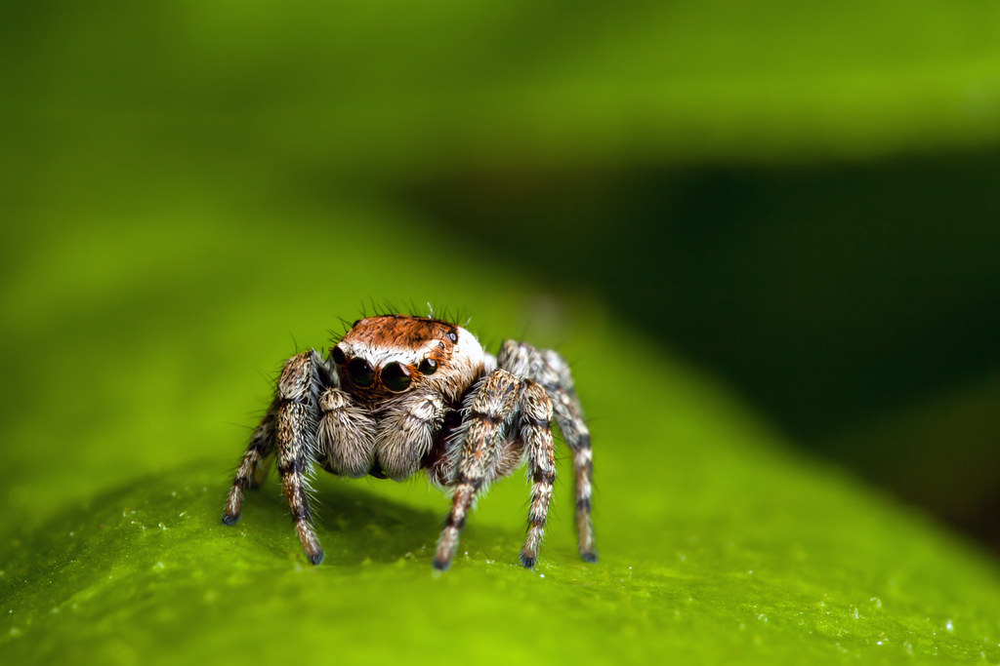
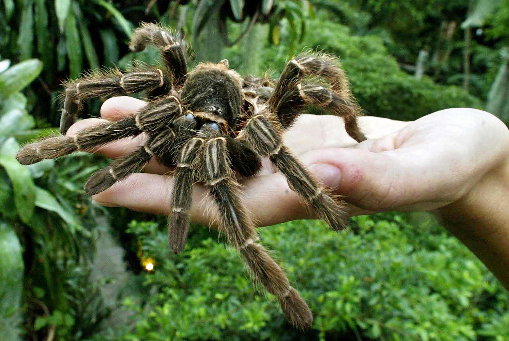
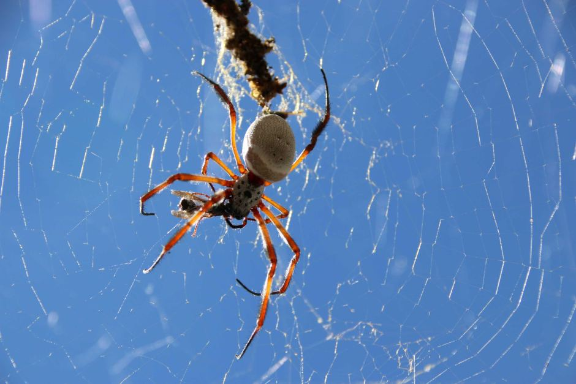

Nhện
Đặc điểm ngoài tự nhiên
Cơ thể của chúng chỉ có hai phần: phần đầu ngực và phần bụng, chúng có tám chân, miệng không hàm nhai, không cánh.
Tập tính cơ bản
Nhện đều có khả năng làm màng nhện, một thứ sợi mỏng nhưng bền như tơ bằng chất đạm, tiết ra từ phần sau cùng của bụng. Màng nhện được dùng làm nhiều việc như tạo dây để leo trèo trên vách, làm tổ trong hốc đá, tạo nơi giữ và gói mồi, giữ trứng và giữ tinh trùng. Nhiều loài nhện dùng tính chất dính của màng nhện để bẫy mồi, trong khi một số loài khác săn mồi bằng cách rình, và tấn công phục kích.


